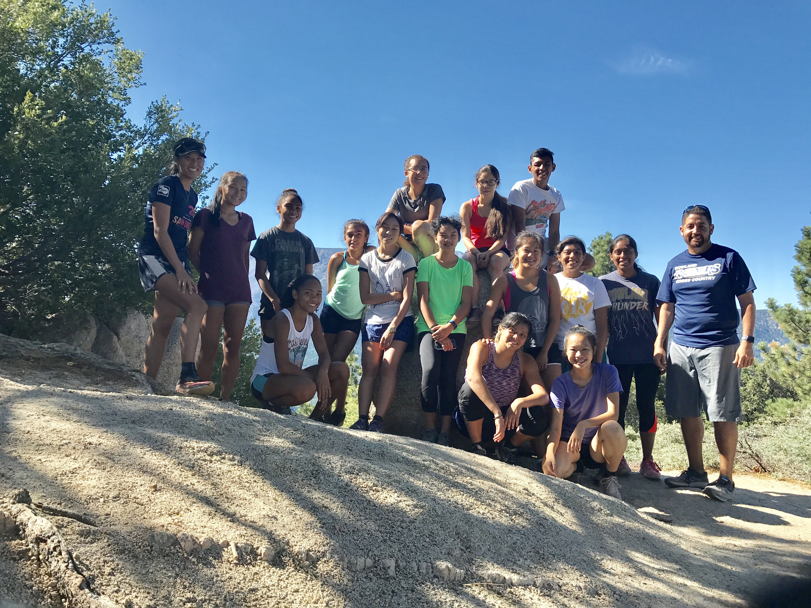
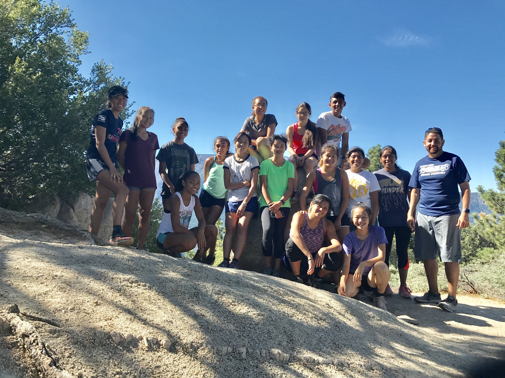

Teacher
My name is Pascale Co and I am a teacher at Rowland High School. I teach math, AVID and Computer Science Principles. I also am the club advisor to Christians on Campus and coach cross country.
Here are 10 facts about me.
- I was born in France and came to the US when I was ten.
- I have been teaching for 6 years. This will be my 7th year.
- I went to Hofstra University and received a BA in Math and mathematics education with a minor in French.
- I ran my 11th marathon before coming to this PLTW training.
- I love running and started running after college.
- I also love running on trails.
- I did the Whole30 food experiment this past summer and loved it! I focused on eating unprocessed foods and it felt good!
- I love baking. I love making green tea pistachio cookies.
- I love dark chocolate, not of the sugary stuff.
- I love working out.